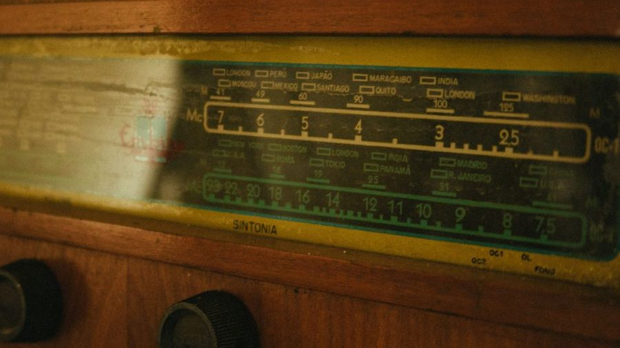

Sixteen Metres After Dark

Sixteen metres is supposed to be a daytime band. The frequencies between 17.480 and 17.900 MHz ride on a layer of the ionosphere that needs direct sunlight to stay dense enough to bend a signal back to earth, and once the sun drops, that layer thins, the maximum usable frequency falls below the band, and reception closes out within an hour or two of local sunset. That is the textbook pattern, and for most of the year here it holds close enough to set a clock by. This April it didn't. On eleven nights out of thirty, a station on 17.870 MHz kept coming through well past ten in the evening, and on three of those nights it was still readable past eleven — hours after the band had any business staying open. This is a log of those nights: what came through, when it finally dropped, and the best explanation available for why the exception kept repeating.
What Sixteen Metres Usually Does After Sunset
The ordinary pattern is unremarkable enough to be boring, and that is exactly the point of logging it — a boring baseline is what makes an exception visible. Through the winter and into early spring, 17.870 MHz would fade under the noise floor within about ninety minutes of local sunset, sometimes faster on nights when geomagnetic activity was elevated. Nineteen metres, one band down, would typically hang on another hour past that. Thirteen metres, one band up, was usually gone before sixteen even started to fade — it needs more sunlight to stay open, so it tends to close first. That stacking order is one of the more dependable things about high-frequency propagation, and it doubles as a quick sanity check: if sixteen is open but thirteen has been dead for an hour, something ordinary is probably happening. If sixteen is open and thirteen is still audible too, that pattern is worth writing down.
The grayline window covers a related but distinct exception — the brief overlap at dawn and dusk where an entire path sits in twilight and short skip opens up. What happened in April wasn't that. These openings ran for hours after the grayline had come and gone, well into full darkness at both ends of the path.
The April Log, Night by Night
Eleven exceptions in a month is enough to look for a pattern and not quite enough to prove one. The table below covers the five clearest cases logged — nights where the signal stayed strong enough past 22:00 local to write down a confident report, rather than chasing something near the noise floor.
| Date | Expected close (local) | Actually dropped | Peak signal | Note |
|---|---|---|---|---|
| Apr 3 | ~21:10 | 23:40 | S7 | Steady; only minor fading after 23:00 |
| Apr 9 | ~21:05 | 22:55 | S6 | Logged alongside a faint trace on 13m |
| Apr 14 | ~21:20 | 23:15 | S8 | Strongest night of the month |
| Apr 21 | ~21:00 | 22:40 | S5 | Marginal but consistently readable |
| Apr 27 | ~21:15 | 23:50 | S7 | Longest hold of the set |
The Night It Wouldn't Let Go
April 27th deserves its own paragraph, because it is the entry that made this whole log worth keeping. The signal held past eleven, past eleven-thirty, and was still readable — weaker, drifting under a light flutter fade, but readable — pushing toward midnight. The margin note from that session, written half-asleep with a flashlight and a clipboard, reads exactly like this:
April 27, 23:48 local. Still there. If the sun says this shouldn't be happening, the sun is welcome to take it up with the S-meter.
That's not analysis, it's just what got scribbled down at the time. But the sentiment holds up: propagation models describe an average, not a promise, and the average is built from thousands of individual nights that each had their own reasons for cooperating — or not.
Why This Keeps Happening
There isn't one tidy explanation, and anyone offering a confident single cause is probably reconstructing it after the fact. A few candidates line up with the dates, though none of them account for all eleven nights on their own.
- Elevated solar flux in the days before each exception, which can raise the ionosphere's ceiling and keep the MUF above 17 MHz later into the evening.
- Quiet geomagnetic conditions on the same nights — a low Kp index tends to correlate with cleaner, longer-holding high-band openings.
- Sporadic-E or other transient ionization somewhere along the path, which can prop up a signal independent of the usual F2-layer pattern.
- Plain estimation error — the "expected close" time in the table is itself a formula-based guess, not a hard boundary anyone can measure directly.
What the Numbers Actually Show
Cross-referencing the five logged dates against published solar flux figures, four of the five sat noticeably above the month's running average, and three lined up with an unusually quiet geomagnetic stretch. That's a pattern worth watching for next April, not a rule to plan around — five data points from one antenna in one location is a small sample, and the fifth night broke the flux trend entirely while still holding for nearly three hours.
Confirming It, Properly
One line has to be checked before any of this gets taken seriously: was the receiver actually hearing sixteen metres, or was something local leaking in and mimicking a signal? A run of nights that all break the usual pattern is exactly the kind of thing that should make a listener suspicious of the equipment before the ionosphere. The process for telling the two apart is covered separately in reading the noise floor before you blame the radio — the short version here is that a second receiver on a different antenna, plus an online SDR three states away, logged the same signal at the same frequency and roughly the same strength on both April 14th and April 27th, which rules out a purely local artifact for at least those two nights.
A signal report logged from one location, however carefully timed, is still a claim rather than a confirmation. Reception reports went out for the three strongest sessions — April 3rd, 14th, and 27th — with exact frequency, UTC time, and signal quality noted for each. Two cards have come back so far, both confirming the transmitted schedule matched what was logged, and neither able to explain the extended propagation, because station engineers are not propagation forecasters any more than listeners are. That's fine. A card's job is to confirm what was transmitted, not why it was heard three hours later than expected.